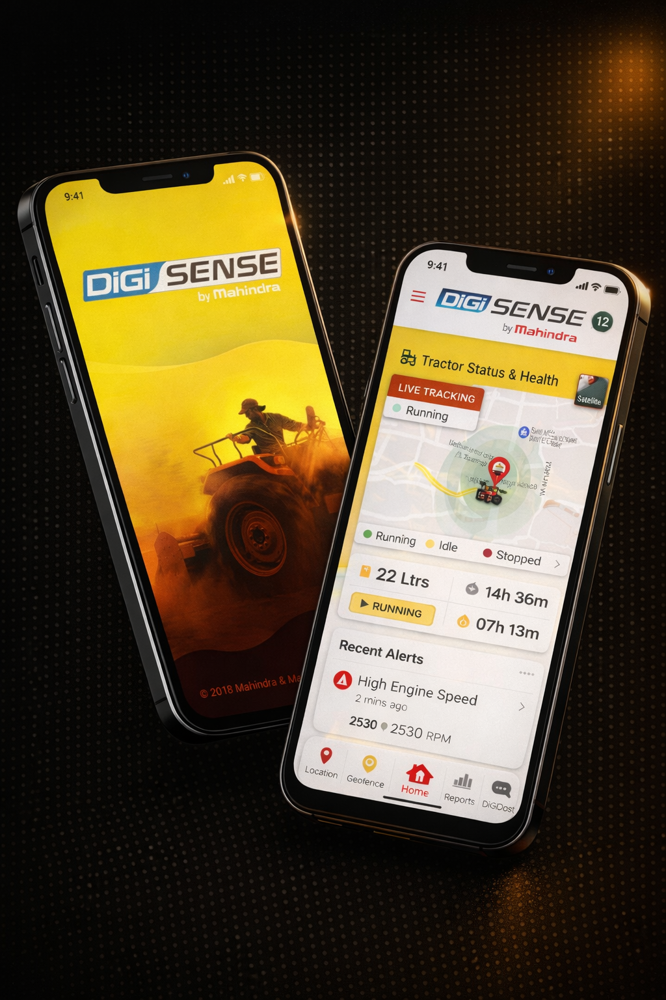

I spent 30 days finding out.

DiGiSense was Mahindra's bet on the future of farming. A connected telematics platform embedded directly into their tractors — giving farmers real-time tracking, engine diagnostics, geofencing, and fuel monitoring through a mobile app and web dashboard.
On paper, it was a compelling product. In reality, it was quietly failing.
Farmers had paid ₹20,000+ for the technology. Dealers had sold it confidently. Mahindra had built a sophisticated platform designed to eventually drive predictive analytics, operational efficiency, and new revenue streams. But the data told a different story.
Lead UX Designer · Extentia Experience Studio · Mahindra's design partner
Research · Synthesis · Stakeholder Alignment · Design Delivery across mobile and web.
Why is a product that farmers say they like, failing to create meaningful engagement — and what will it take to fix that?
"Without adoption, there was no data. Without data, there was no platform. Without a platform, the entire strategic vision collapsed."The business case for this project
DiGiSense wasn't a simple app with one type of user. It was a three-sided ecosystem — and each side wanted something fundamentally different.
Farmers
End Users
Dealers
Distribution Layer
Mahindra HQ
Product Owners
Every decision we made had to thread through all three groups simultaneously. A feature that delighted Mahindra stakeholders could overwhelm a farmer. A simplification that worked for farmers could undermine the dealer's ability to demonstrate value.
This is why the project needed a systems approach — not just a screen redesign.
This was the first bottom-up consumer research Mahindra had ever conducted for DiGiSense — everything before it had been assumption-driven.
Every interview followed a structured observation framework that moves from surface behaviour to emotional drivers.
What is the person doing right now?
How are they doing it? With effort? With confusion?
What is the emotional driver behind this behaviour?
Intent + introductions
Tell me about the last time you...
Can you show me how you...
5 Whys — why do you...
| Method | Learning Goal | What We Actually Found |
|---|---|---|
| Farmer field interviews (34) | Current usage patterns + pain points | Users knew only 8 of 16 features. Average feature awareness: 50% |
| Stakeholder interviews (3) | Business vision + strategic priorities | "A bottom consumer study was not done. We just took standard telematics." |
| Dealer + CCM interviews (5) | Sales + support chain health | DiGiSense had become a burden for dealers — not a selling point |
| Cognitive walkthrough | Task difficulty on critical flows | Creating a geofence took 350 seconds and 37 clicks |
| Competitor analysis | Benchmark against JD Link | JD Link's advantage wasn't features — it was installation service and SIM card freedom |
"A bottom consumer study was not done. We just took standard telematics."
In one sentence, the entire product problem became clear. DiGiSense had been built for a farmer that Mahindra had imagined — not the farmer that actually existed. Our job wasn't just to fix the UX. It was to introduce Mahindra to their own user for the first time.
The mobile app — the only surface farmers actually used — exposed just 4 of 16 features. The rest lived on a web dashboard. Farmers don't own laptops. The result: farmers felt misled. Not because Mahindra had lied, but because the product experience didn't match the promise made at the dealership.
Feature fragmentation wasn't a technical inconvenience — it was actively destroying trust at scale. Mobile parity wasn't a nice-to-have. It was the single most important business decision the product team could make.
Nearly a third of farmers had never opened the app. They received SMS alerts, acted on them, and considered themselves DiGiSense users. This wasn't laziness. For a farmer moving between fields with unreliable connectivity and a basic smartphone, SMS was genuinely the better tool.
Designing only for the app meant designing for 71% of users while ignoring 29%. The system needed to treat SMS as a first-class product surface — not a fallback.
Every farmer learned about DiGiSense exactly once — at the moment of tractor purchase. After that: nothing. When things broke, farmers came back to dealers. Dealers had no tools to help them. DiGiSense had become, in one dealer's words, "a burden we have to carry."
No amount of app redesign would fix adoption if the onboarding moment — which happened at the dealership, not in the app — remained broken.
The farmers actually using the app were 18–38 years old. Their mental models were built on WhatsApp, YouTube, Paytm, and Facebook. They compared DiGiSense unfavourably to Facebook — not because they wanted entertainment, but because they expected the same intuitive, engaging experience.
The interface didn't need to educate users into a new paradigm. It needed to meet them inside the mental models they already had.
DiGiSense devices were locked to Vodafone. But Jio dominated Punjab. Airtel dominated Telangana. BSNL was strongest in Nashik. The app appeared broken when tractors moved into low-coverage areas. Farmers lost trust in the product — assuming it had malfunctioned — when the real problem was a locked SIM card on a network with poor rural coverage.
The highest-impact recommendation we made wasn't a redesigned screen. It was giving farmers the freedom to choose their own SIM card — a business infrastructure decision that sat entirely outside the design team's control. Making that recommendation, and building the case for it with research evidence, was one of the most important things we did on this project.
Mahindra's product stakeholders. They had invested significantly in building 16 features and wanted all of them visible and accessible.
We reframed the metric. The question wasn't "how many features are available?" It was "how many features are actually being used?" Research showed farmers were aware of only 50% — meaning half the product was already invisible.
Short-term stakeholder satisfaction. The recommendation required Mahindra to accept that less, done well, would outperform more, done poorly.
The engineering team flagged complexity. The PM flagged timeline risk. Expanding scope is never a popular decision mid-project.
We showed that the app redesign would fail without fixing the entry point. Farmers formed their entire mental model of DiGiSense in the first 10 minutes at a dealership. The dealer portal wasn't a nice-to-have. It was load-bearing.
Simplicity of delivery. A single app redesign would have been faster and cleaner. We chose the harder, more complete solution.
Nobody explicitly — but this was the most culturally sensitive recommendation. Telling a client their foundational user assumption was wrong requires evidence, diplomacy, and care.
We let the research speak. When stakeholders saw Astute Anil comparing DiGiSense unfavourably to Facebook — not because he wanted games, but because he expected intuitive engagement — the shift in thinking happened naturally.
Nothing, ultimately. But the conversation required trust built through the rigour of the research phase. Without that credibility, this recommendation would have been dismissed.
The existing app had no clear hierarchy. Farmers opened it and faced 16 features with equal visual weight — no sense of what mattered most or what to do first.
Reduced to 5 prioritised elements — Live Tracking status, Fuel Level, Engine Hours, PTO Hours, and Recent Alerts. Everything else accessible but not competing for attention on first load.
"The bottom navigation mirrors WhatsApp's tab structure — deliberately." Farmers used WhatsApp daily. Matching that mental model reduced the learning curve to near zero.
The original geofencing flow required 37 clicks and 350 seconds. It was web-only — meaning farmers who didn't own laptops couldn't access it at all.
Rebuilt as a native mobile flow — 3 steps instead of 4 major stages. Satellite view as default. Two anchoring tools added: Locate My Tractor and Locate Me.
"Satellite view as default wasn't an aesthetic choice." It was the only way a farmer with no formal address could find his own land.
Farmers used live tracking as their primary trust signal — not for navigation, but to confirm their driver was where they were supposed to be. The existing screen showed a static map that required manual refresh.
Unified Live Tracking and Location History into a single coherent surface — because farmers mentally thought of them as one thing: "where has my tractor been?"
"The refresh button was removed entirely." In a product that farmers had lost trust in, making data feel automatic — not manual — was a trust repair decision as much as a UX decision.
44 interviews in 4 languages processed by 3 people over 4 days introduces significant bias risk. Today I'd use AI-assisted qualitative analysis to process the full dataset simultaneously — surfacing pattern clusters, contradictions, and outliers that manual affinity mapping might miss or flatten.
The goal isn't to remove human judgement. It's to give human judgement better raw material to work with.
The current alert system is reactive — it fires when sensors cross a threshold. With ML trained on fleet-wide data — engine hours patterns, PTO cycles, temperature curves — the system could shift from reactive to predictive.
Instead of: "Your fuel is low."
The system could say: "Based on your usage patterns, your tractor will likely need servicing in 3–5 days."
We solved the two-user-type problem with static personas and a single progressive disclosure model. Today I'd design an adaptive onboarding layer that observes behaviour in the first 7 days and adjusts the interface accordingly.
Personalisation at scale. Without asking the farmer to tell us who they are.
These three opportunities share a common thread — they all move DiGiSense from a monitoring tool to an intelligence layer. From a product that tells farmers what happened, to one that helps them decide what to do next.
Our feature awareness finding came from self-reporting. Farmers told us what they thought they knew. That's directionally useful but inherently imprecise. Today I would push for analytics instrumentation from day one — before research begins, not after. Actual usage data and interview data interrogating each other produces far stronger insight than either alone. Numbers in a research deck land differently than quotes.
The dealer portal concept emerged late in the project as a recommendation — almost an afterthought to the main app redesign. In hindsight, it should have been scoped as a core deliverable from the beginning. The trust gap between farmers and DiGiSense wasn't created in the app. It was created in the first 10 minutes at a dealership. If I were structuring this project today, the dealer onboarding tool would be workstream one — not an appendix to the final presentation.
Four people doing manual affinity mapping across 44 interviews over four days is a significant undertaking — and a significant source of bias risk. By day three of synthesis, you're tired, pattern-locked, and unconsciously gravitating toward the insights that confirm what you already suspect. Today I would run AI-assisted qualitative analysis alongside manual synthesis — not to replace human judgement, but to challenge it. The goal isn't to automate insight. It's to make human insight more honest.